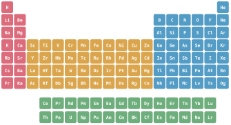
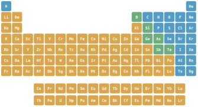

Pendure-a em qualquer sala de aula de química do mundo e ela será reconhecida na hora: aquele bloco colorido de quadradinhos, cada um com uma letra e um número. A Tabela Periódica é muito mais do que um pôster. É um sistema que organiza tudo aquilo de que a matéria é feita — e que prevê o comportamento de elementos que você nunca viu, só pela posição que ocupam.
Neste artigo você vai entender o que é a Tabela Periódica, como ler suas linhas e colunas, o que são os blocos e as famílias de elementos, a história fascinante por trás de sua criação e as tendências periódicas que explicam por que ela funciona tão bem.

§ 01 O que é a Tabela Periódica
A Tabela Periódica é a forma padrão de organizar os elementos químicos — as substâncias mais simples, feitas de um único tipo de átomo, como hidrogênio, oxigênio ou ouro. Cada elemento ocupa uma célula com seu símbolo (por exemplo, O para oxigênio), seu número atômico (a quantidade de prótons no núcleo) e sua massa atômica.
O segredo está na ordem. Os elementos são dispostos em ordem crescente de número atômico, da esquerda para a direita e de cima para baixo. Mas o arranjo não é uma fila simples: ele é "dobrado" em linhas e colunas de modo que elementos com comportamento químico parecido caiam exatamente uns embaixo dos outros. É daí que vem o nome: as propriedades se repetem de forma periódica.
§ 02 Períodos e grupos: como ler a tabela
Duas direções estruturam toda a tabela:
- Períodos são as 7 linhas horizontais. Ao percorrer um período da esquerda para a direita, vamos adicionando um próton (e um elétron) de cada vez. O número do período indica quantas camadas de elétrons o átomo possui.
- Grupos (ou famílias) são as 18 colunas verticais. Elementos do mesmo grupo têm o mesmo número de elétrons na camada de valência — a camada mais externa — e, por isso, reagem de maneira parecida.
É essa simples regra — mesma coluna, mesma valência — que torna a tabela tão poderosa. Saber que o sódio (Na) e o potássio (K) estão no mesmo grupo já adianta que ambos são metais muito reativos que reagem violentamente com a água.
§ 03 Os blocos s, p, d e f
A tabela também pode ser dividida em quatro blocos, que correspondem ao tipo de orbital onde o último elétron do átomo se encaixa:
- Bloco s — as duas primeiras colunas (metais alcalinos e alcalino-terrosos), mais o hidrogênio e o hélio.
- Bloco p — as seis colunas da direita, onde estão os não metais, os semimetais e os gases nobres.
- Bloco d — os metais de transição, no centro da tabela (ferro, cobre, ouro…).
- Bloco f — os lantanídeos e actinídeos, geralmente desenhados em duas linhas separadas embaixo da tabela para não deixá-la larga demais.
§ 04 As principais famílias de elementos
Alguns grupos são tão característicos que recebem nomes próprios:
- Metais alcalinos (grupo 1): muito reativos, moles, reagem com água.
- Metais alcalino-terrosos (grupo 2): reativos, mas menos que os alcalinos (cálcio, magnésio).
- Metais de transição (grupos 3 a 12): resistentes, bons condutores, formam compostos coloridos (ferro, cobre, zinco).
- Halogênios (grupo 17): não metais muito reativos, formam sais (flúor, cloro, iodo).
- Gases nobres (grupo 18): praticamente inertes, pois já têm a camada de valência completa (hélio, neônio, argônio).
- Lantanídeos e actinídeos: elementos do bloco f; entre os actinídeos estão o urânio e o plutônio.
§ 05 Uma breve história
A tabela não nasceu pronta. Ela é resultado de décadas de tentativas de organizar o caos dos elementos conhecidos:
- 1829 — Tríades de Döbereiner. O químico alemão Johann Döbereiner percebeu grupos de três elementos com propriedades relacionadas.
- 1864 — Oitavas de Newlands. John Newlands notou que, a cada oito elementos ordenados por massa, as propriedades pareciam se repetir, como notas musicais.
- 1869 — Mendeleev. O russo Dmitri Mendeleev publicou a tabela que conhecemos. Seu golpe de gênio foi deixar lacunas para elementos ainda não descobertos e prever as propriedades deles. Quando o gálio e o germânio foram descobertos, encaixaram-se quase perfeitamente nas previsões — o que consagrou a tabela.
- 1913 — Moseley. O físico britânico Henry Moseley mostrou que o critério correto de ordenação não era a massa, e sim o número atômico. Isso corrigiu algumas inversões e deu à tabela sua base definitiva.
- Século XX — Seaborg. Glenn Seaborg reorganizou a parte inferior da tabela ao posicionar a série dos actinídeos, abrindo caminho para os elementos sintéticos pesados.
§ 06 Por que a tabela funciona
A grande revelação do século XX foi entender que a periodicidade vem da configuração eletrônica dos átomos. Os elétrons se organizam em camadas e subcamadas (orbitais), e é a camada mais externa que determina como um elemento reage.
Como os elétrons de valência se repetem em padrões previsíveis à medida que o número atômico aumenta, as propriedades químicas também se repetem. A tabela, portanto, não é uma convenção arbitrária: ela é o retrato da estrutura eletrônica dos átomos.
§ 07 As tendências periódicas
Por causa dessa estrutura, várias propriedades variam de maneira regular ao longo da tabela. As quatro mais importantes:
- Raio atômico — o "tamanho" do átomo. Em geral diminui ao longo de um período (da esquerda para a direita) e aumenta ao descer um grupo.
- Energia de ionização — a energia necessária para arrancar um elétron. Aumenta ao longo do período e diminui ao descer o grupo.
- Eletronegatividade — a tendência de um átomo atrair elétrons em uma ligação. Cresce em direção ao flúor, no canto superior direito.
- Afinidade eletrônica — a energia liberada quando um átomo ganha um elétron.
§ 08 Como usar a Tabela Periódica hoje
Na prática, a tabela é uma calculadora visual. Com ela você consegue, num relance:
- prever se um elemento é metal, não metal ou semimetal;
- estimar a reatividade e o tipo de ligação que ele tende a formar;
- encontrar a massa atômica para calcular massas molares;
- comparar propriedades entre elementos vizinhos.
Explore a tabela periódica interativa do Atomurus para clicar em qualquer elemento e ver seus dados completos, ou use a ferramenta de Comparação para colocar dois elementos lado a lado.
§ 09 Metais, ametais e semimetais
Além dos blocos e das famílias, a tabela divide os elementos em três grandes classes, separadas por uma famosa linha em "escada" que desce pelo lado direito:
- Metais — a grande maioria (tudo à esquerda da escada). São brilhantes, conduzem calor e eletricidade, são maleáveis e dúcteis, e tendem a perder elétrons formando íons positivos (cátions).
- Ametais (não metais) — o canto superior direito (mais o hidrogênio). São maus condutores, muitas vezes gases ou sólidos quebradiços, e tendem a ganhar ou compartilhar elétrons, formando íons negativos (ânions) ou ligações covalentes.
- Semimetais (metaloides) — a estreita faixa diagonal ao longo da escada (boro, silício, germânio, arsênio, antimônio e telúrio). Ficam no meio-termo, com propriedades mistas — o silício, por exemplo, é o semicondutor no coração de todo chip de computador.

§ 10 Como ler uma célula da tabela
Cada célula concentra quatro informações essenciais em um pequeno quadrado. Quando você aprende a ler uma, lê todas as 118:
O número atômico (Z) é a carteira de identidade: é a quantidade de prótons e nunca muda para um dado elemento. A massa atômica, logo abaixo do símbolo, é a média ponderada das massas dos isótopos naturais — por isso raramente é um número inteiro.
§ 11 A fronteira: os elementos sintéticos
Nem todos os elementos existem na natureza. Tudo além do urânio (Z = 92) é essencialmente sintético — forjado em reatores nucleares ou aceleradores de partículas, chocando núcleos mais leves uns contra os outros. Esses elementos superpesados, que completam o período 7 até o oganessônio (Z = 118), são intensamente radioativos e muitas vezes sobrevivem por apenas frações de segundo antes de decair.
Como desaparecem tão rápido, alguns só existiram como um punhado de átomos. Isso levanta uma pergunta natural: existe um limite? Físicos formulam a hipótese de uma "ilha de estabilidade" — um conjunto de elementos superpesados ainda não descobertos cujos números específicos de prótons e nêutrons os tornariam muito mais duradouros que os vizinhos. Procurá-la é uma das fronteiras da química moderna — e a razão pela qual a tabela ainda pode crescer.
§ 12 Perguntas frequentes
Por que o hidrogênio às vezes aparece sozinho?
O hidrogênio tem um único elétron, como os metais alcalinos do grupo 1, então costuma ficar no topo do grupo 1. Mas é um ametal e se comporta de forma muito diferente do sódio ou do potássio, então algumas tabelas o colocam flutuando acima do centro para mostrar que ele não pertence de fato a nenhuma família.
Por que existem exatamente 18 grupos?
O número de colunas reflete como os elétrons preenchem as subcamadas externas: 2 na subcamada s e 6 na subcamada p dão as 8 colunas dos grupos principais, e as 10 colunas dos metais de transição vêm da subcamada d (2 + 6 + 10 = 18).
Qual é o elemento mais eletronegativo?
O flúor, no canto superior direito dos ametais reativos, é o elemento mais eletronegativo — atrai os elétrons de uma ligação com mais força que qualquer outro átomo.
Por que os lantanídeos e actinídeos ficam embaixo da tabela?
Eles pertencem ao bloco f, entre os grupos 2 e 3 dos períodos 6 e 7. Desenhados no lugar, deixariam a tabela com cerca de 32 colunas de largura; destacá-los a mantém compacta e legível.
§ Fontes Referências e leitura
- IUPAC — Periodic Table of the Elements (versão oficial e nomenclatura).
- Scerri, E. The Periodic Table: Its Story and Its Significance.
- Mendeleev, D. — trabalho original de 1869 sobre a classificação periódica dos elementos.
- Moseley, H. (1913) — sobre o número atômico como critério de ordenação.